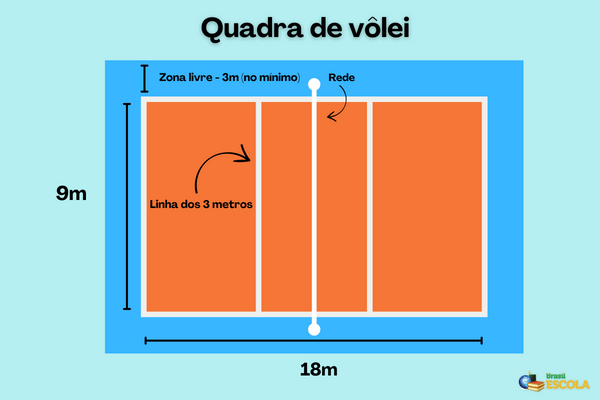

Regras do voleibol
"As regras do vôlei sofrem mudanças e adaptações desde a criação do esporte, no ano de 1895. Fique por dentro das especificações da área da quadra, dos equipamentos, da quantidade de jogadores, das ações que causam faltas e da evolução das regras nos tópicos a seguir."
Área de jogo e equipamentos do vôlei
A área de jogo do vôlei é formada pela quadra de jogo e a zona livre. A quadra de vôlei contém 18 metros de comprimento por 9 metros de largura, sendo retangular e simétrica.
Confira as dimensões da quadra de vôlei na imagem abaixo:

Nas competições oficiais, a zona livre (que não possui obstáculos) deve medir 5 metros de largura nas laterais e 6,5 metros ao fundo. A altura livre deve ser de, pelo menos, 12,5 metros. A superfície da quadra deve ser plana, horizontal e sem quaisquer irregularidades que possam prejudicar a realização da prática.
A zona de ataque possui nove metros de largura, situada ao fundo da quadra.
A rede é instalada verticalmente sobre a linha central. Sua altura difere de acordo com o gênero, para homens é de 2,43 metros e para mulheres, 2,24 metros.
A bola de vôlei deve ter uma capa flexível de couro ou couro sintético, bem como deve conter uma câmara inferior fabricada em borracha ou material semelhante.
Nos eventos oficiais de vôlei, há uma definição de temperaturas específicas entre 16 ºC e 25 ºC.
"Posições dos jogadores no vôlei"
"As posições dos jogadores são distribuídas da seguinte forma:"
| LINHA DE FRENTE/TRÁS |
POSIÇÃO |
| frente-esquerda |
posição 4 |
| trás-esquerda |
posição 5 |
| frente-central |
posição 3 |
| trás-central |
posição 6 |
| frente-direita |
posição 2 |
| trás-direita |
posição 1 |
Voltar
Proxima Pagina